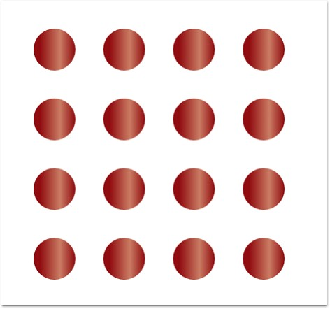

Table layout arranges the nodes in a tabular structure based on specified intervals between them. The number of nodes in each row and column can be specified and the layout will take place accordingly. The nodes are assigned rows and columns based on the order in which they are added to the model and based on the maximum nodes allowed in that row and column. This layout enables to layout nodes automatically without the need to specify offset positions for each node.
Table 11: Property Table
|
Property |
Description |
Type of the property |
Value it accepts |
|
VerticalSpacing |
Gets or sets the Vertical spacing between nodes. |
CLR property |
Double |
|
HorizontalSpacing |
Gets or sets the Horizontal spacing between nodes. |
CLR property |
Double |
|
Orientation |
Gets or sets the orientation. |
CLR property |
TreeOrientation.LeftRight TreeOrientation.RightLeft TreeOrientation.TopBottom TreeOrientation.BottomTop |
|
TableExpandMode |
Gets or sets the table expand mode. |
DependencyProperty |
ExpandMode.Horizontal ExpandMode.Vertical |
|
RowCount |
Gets or sets the Row Count for the table layout. |
DependencyProperty |
int |
|
ColumnCount |
Gets or sets the Column Count for the table layout. |
DependencyProperty |
int |
|
EnableLayoutWithVariedSizes |
Gets or sets a value indicating whether to enable the varied size algorithm. In case the Model consists of the nodes of different sizes, this property can be set to true. This will align the differently sized nodes with respect to the centre. |
DependencyProperty |
Boolean (true/ false) |
|
Bounds |
Gets or sets the bounds value which specifies the position of the root node in case of tree layout. |
CLR property |
Thickness |
Table 12: Methods
|
Name |
Parameters |
Return Type |
Description |
Reference Links |
|
RefreshLayout() |
Null |
void |
Refresh the layout |
N/A |
The Layout Manager lets you orient the table in two directions, Horizontal and Vertical. The TableExpandMode property of Diagram Model is used to specify the orientation.
Horizontal: When set to Horizontal, the Rowcount is automatically calculated based on the number of nodes. The ColumnCount must be specified and the nodes will be arranged in the specified number of columns. When the maximum column count is reached, it starts placing the nodes in a new row.
Vertical: When set to Vertical, the Columncount is automatically calculated based on the number of nodes. The RowCount must be specified and the nodes will be arranged in the specified number of rows. When the maximum row count is reached, it starts placing the nodes in a new column.
The Bounds property of the DiagramView class can be used to specify the position of the first node.
|
[XAML]
<Window x:Class="RadialTreeLayout_2008.Window1" xmlns="http://schemas.microsoft.com/winfx/2006/xaml/presentation" xmlns:x="http://schemas.microsoft.com/winfx/2006/xaml" Title="Radial Tree Layout Demo" WindowState="Normal" WindowStartupLocation="CenterScreen" Name="mainwindow" xmlns:syncfusion="http://schemas.syncfusion.com/wpf" Icon="App.ico" FontWeight="Bold" xmlns:local="clr-namespace:RadialTreeLayout_2008" Height="1000" Width="900">
<syncfusion:DiagramControl IsSymbolPaletteEnabled="False" Name="diagramControl">
<!-- Model to add nodes and connections--> <syncfusion:DiagramControl.Model> <syncfusion:DiagramModel LayoutType="TableLayout" EnableLayoutWithVariedSizes="False" TableExpandMode="Horizontal" HorizontalSpacing="50" VerticalSpacing="50" RowCount="4" ColumnCount="4" x:Name="diagramModel"> </syncfusion:DiagramModel> </syncfusion:DiagramControl.Model>
<!--View to display nodes and connections added through model.--> <syncfusion:DiagramControl.View> <syncfusion:DiagramView Bounds="0,0,200,200" Name="diagramView"/> </syncfusion:DiagramControl.View>
</syncfusion:DiagramControl> |
|
[C#]
DiagramControl dc = new DiagramControl(); DiagramModel diagramModel = new DiagramModel(); dc.Model = diagramModel; diagramModel.LayoutType = LayoutType.TableLayout; diagramModel.TableExpandMode = ExpandMode.Horizontal; diagramModel.EnableLayoutWithVariedSizes = false; diagramModel.HorizontalSpacing = 50; diagramModel.VerticalSpacing = 50; diagramModel.RowCount = 10; diagramModel.ColumnCount = 3; |
|
[VB]
Dim dc As New DiagramControl() Dim diagramModel As New DiagramModel() dc.Model = diagramModel diagramModel.LayoutType = LayoutType.TableLayout diagramModel.TableExpandMode = ExpandMode.Horizontal diagramModel.EnableLayoutWithVariedSizes = False diagramModel.HorizontalSpacing = 50 diagramModel.VerticalSpacing = 50 diagramModel.RowCount = 10 diagramModel.ColumnCount = 3 |

Figure 23: Table Layout with 4 Columns and 4 Rows
Layout Spacing
Spacing between the nodes with respect different levels and
siblings are adjustable; this will be helpful to adjust the distance between
nodes, so that it will meet many business needs. As this is a general topic
between all layouts, detailed explanation about this can be found in Layout Spacing under DiagramModel.
Refresh Layout
When there are changes in content of the page like new nodes or connectors added, the layout has to be refreshed to get the page’s content aligned again to give space for new contents. To refresh the layout please follow the following code snippet.
|
[C#]
TableLayout tree = new TableLayout(diagramModel, diagramView); tree.RefreshLayout(); |
|
[VB]
Dim tree As New TableLayout(diagramModel, diagramView) tree.RefreshLayout() |
Here diagramModel and diagramView is an
instance of DiagramModel and DiagramView respectively.
There are some more customization supported for
Table Layout, please refer the links following ‘see also’ topic.
See Also
Layout Spacing Refer Concepts and Features -> Diagram Model -> Layout Spacing
TableExpandMode Refer Concepts and Features -> Diagram Model -> TableExpandMode
RowCount and ColumnCount Refer Concepts and Features -> Diagram Model -> RowCount and ColumnCount
Enable TableLayout with varied Node sizes Refer Concepts and Features -> Diagram Model -> Enable TableLayout with varied Node size